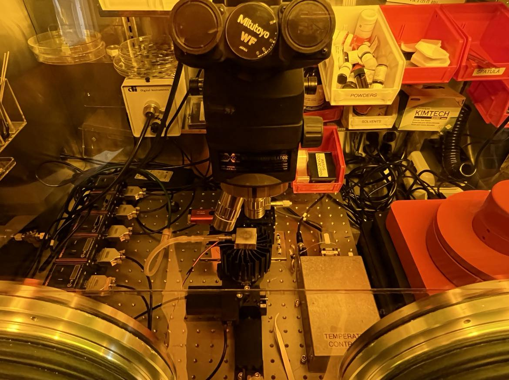
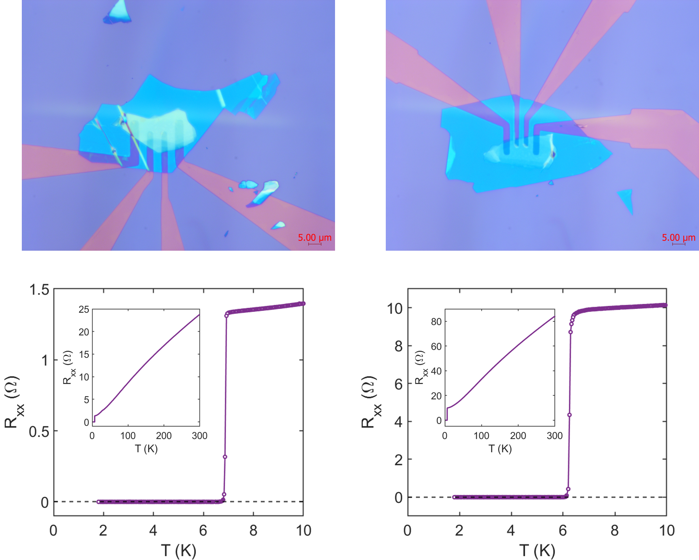

Overview
An essential tool in fabricating devices using van der Waals (vdW) materials is a 2D material transfer setup. This system allows precise placement of selected 2D material flakes onto desired locations on a substrate. Building such a setup is critical for encapsulating air-sensitive materials like graphene and other vdW materials within stable dielectrics such as hexagonal boron nitride (hBN) and mica, ensuring their stability for characterization and use in ambient conditions.
In some applications, the 2D material transfer process is also used to fabricate devices by placing vdW flakes onto pre-patterned electrodes, eliminating the need for exposing these sensitive materials to chemicals, high temperatures, and other processes involved in traditional lithography and nanofabrication techniques. This approach preserves the pristine properties of the vdW materials, which is especially important for materials like magnetic vdW heterostructures.
Animated illustration of the 2D material transfer process

Representative video of the 2D transfer process. Here, a vdW material flake from PDMS stamp is being transferred to pre-patterned Ti/Au electrodes.
The transfer process often utilizes stamps made from materials such as polydimethylsiloxane (PDMS) or polypropylene carbonate (PPC). Each of these materials offers different advantages depending on the specific transfer requirements, with PDMS being flexible and transparent for easier alignment, while PPC provides more controlled adhesion during the transfer and release process.
In this setup, the transfer system is housed inside a glovebox, providing a controlled, inert atmosphere to prevent contamination or degradation of the materials. To enhance efficiency and reliability, the setup is highly automated, incorporating computer-controlled motors for precise alignment, temperature control for optimized adhesion, and automated focus interfaces. This automation ensures not only reproducibility but also ease of use, making the setup ideal for handling fragile, air-sensitive materials with minimal manual intervention.
Technical Details
- 8 degrees of freedom – Translation (X, Y, Z), rotation, and tilt.
- Motorized stages – LabVIEW-controlled, with precise translation and rotation.
- PID-controlled heated sample stage – Temperature controlled via Peltier element.
- Microscope with motorized focus – Arduino-based control from outside the glovebox.

Component-wise details of the 2D-transfer setup. The with images were taken during the design and testing phase, before deploying it inside a glovebox
The 2D-material transfer setup is designed with eight degrees of freedom, distributed across the top and bottom stages. The bottom stage assembly enables 25mm translation along two orthogonal horizontal axes (X and Y), using Thorlabs XYT1/M stages, and allows for 360-degree in-plane rotation via a PR01/M rotation stage. The top stage assembly provides 13mm translation along three axes (X, Y, and Z) using Thorlabs RB13M/M stages, along with two-axis tilting via a GNL20/M goniometer. All stages, except the goniometer, are motorized and controlled by a custom LabVIEW program developed for this setup.
Custom-designed vacuum chucks are used to hold glass slides on the top and substrates on the bottom stage. The bottom chuck is integrated with a Peltier element, allowing precise temperature control of the substrate during the transfer process. The Peltier element is powered by a Kepco BOP 36-5M power supply, with input controlled via an Omega PID controller that receives temperature feedback from a thermocouple embedded in the bottom chuck. A dedicated LabVIEW module manages the temperature set-point for the substrate.
View of the 2D material transfer station deployed inside the glovebox.
For microscopy, the setup uses a microscope head from Micromanipulators (got it for parts from eBay), equipped with a motorized focus mechanism. An Arduino-based stepper motor controller, integrated with a LabVIEW module, allows computer-controlled focus adjustments from outside the glovebox, ensuring precise alignment during the transfer process.
Some Results
The 2D Materials Transfer Station has been successfully used for a variety of steps in vdW device fabrication. This includes encapsulating air-sensitive devices using hBN for stable operation in ambient conditions, creating heterostructures of vdW materials (like Fe3GaTe2/WTe2) and also for creating devices by transferring vdW flakes to pre-patterned electrodes. Shown below is an example of superconducting devices fabricated by precisely transferring an air-sensitive van der Waals material (NbSe2) on pre-patterned electrodes and then encapsulating it with hBN. The resulting devices show a sharp superconducting transition, corroborating the effectiveness of the process.
Optical images (top) of NbSe2 devices fabricated using the 2D material transfer setup. The devices were encapsulated with hBN to preserve their air-sensitive properties. The bottom plots show the superconducting transition of these devices, with sharp drops in resistance (Rxx) occurring below 7 K, indicating the onset of superconductivity. Insets show the temperature dependence of resistance over a wider temperature range, confirming the superconducting behavior.